! Rin, where are you !? RIN !
! Rin, where are you !? RIN !
Yugo: Rin
! Rin, where are you !? RIN !
Yugo had been searching everywhere for Rin for a while now, with no trace to her whereabouts. He felt stupid; he should NEVER have left her alone. Yugo knew someone had
been following her lately, so he kept his guard up to protect her. Now the one time he had left Rin, when he thought she would be safe at their place, was obviously
the time he should've been there for her.
had been searching everywhere for Rin for a while now, with no trace to her whereabouts. He felt stupid; he should NEVER have left her alone. Yugo knew someone had
been following her lately, so he kept his guard up to protect her. Now the one time he had left Rin, when he thought she would be safe at their place, was obviously
the time he should've been there for her.
Yugo: Dammit ! This was my fault ! I shouldn't have left Rin alone ! I should've stayed with her !
Yugo cursed himself for his blunder. Earlier that evening, he wanted to stay with Rin to keep an eye out for whoever was tailing her.
Flashback
Rin: I will be okay if I stay home tonight. I really feel that I'll be safe here while you go get some takeout.
She said to her childhood friend. Of course, Yugo protested.
Yugo: No way ! I ain't leaving you by yourself Rin, not for a second! What if whoever's been following you knows where we live ? I need to be here to kick his ass if he tries to hurt you !
Rin tried to assure him that it would be fine.
Rin: It'll be alright Yugo. After you leave, I'll lock the door and secure all the windows. And if anyone happens to knock and it isn't someone we know, I'm
definitely not letting them in. Trust me, I'll be fine here.
Yugo didn't look convinced as he crossed his arms.
Yugo: I still don't agree. What if something does happen to you and I'm not here to help ? I could never forgive myself.
He said softly, looking truly worried. Rin smiled as she hugged her friend.
Rin: I really appreciate you caring so much and wanting to protect me. Everything will be fine. Okay ?
Rin said as she gave him one of her smiles that he just couldn't say no too.
Very reluctantly, Yugo finally agreed to head out to get some food. He took off on their D-Wheel and promised to be back soon. Later, when he came home with their dinner, Yugo knew he had made a grave mistake.
He immediately saw that their door had been broken down, and in pieces. Worst of all, Rin was gone. She was nowhere to be seen. Yugo cursed so loudly he thought the whole Commons area could hear him. Then, on his D-Wheel, he began to search for his lifelong friend. He was afraid he might never find her.
Flashback End
Yugo: Please Rin… PLEASE be alright !
Yugo said to himself as he continued to look. Unbeknownst to Yugo, Rin's guardian angel was already on the move…
Rin was scared as hell as she ran for her life. She had no idea who this psycho was or why he was after her. All she knew was that she couldn't let him catch her. As she ran, she berated herself for convincing Yugo to leave. He wanted to stay by Rin and had every reason to do so. Her own stupidity led to this chase in the night.
After turning a corner, Rin saw to her dismay that she had hit a dead end. She turned around with her back against the wall. She had never felt so afraid in her whole life. Her pursuer then slowed his pace, knowing he had trapped her.
Underneath his cloak, Yuri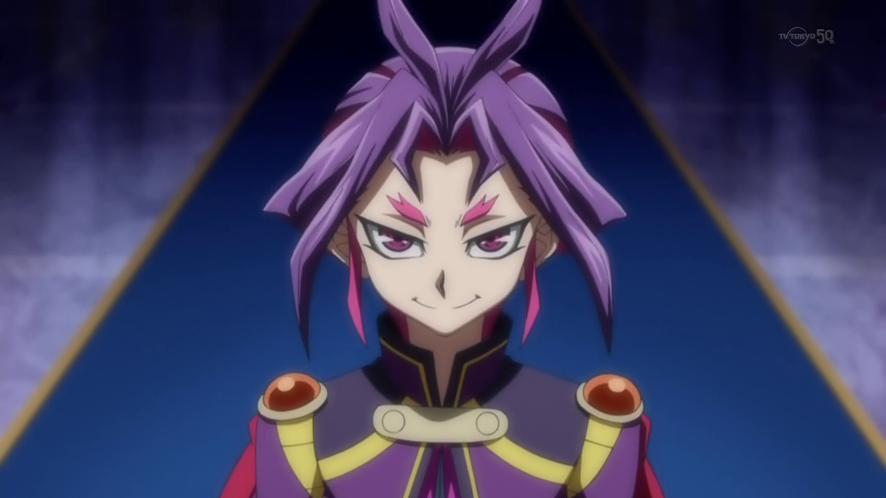 smiled. After the big screwup in the Xyz Dimension, Yuri made sure no one would get the drop on him this time. He didn't want to take any chances. After arriving in the Synchro Dimension, he scouted around his surroundings as he silently stalked the green haired girl with the bracelet, named Rin.
Yuri saw no one that could give him any trouble, though that guy who shared his face stuck to Rin like glue. He kinda wondered why they looked alike, like that
other punk in the Xyz Dimension
who escaped with Ruri
in the Xyz Dimension
who escaped with Ruri .
Honestly, he didn't care as long as he was able to carry out his mission.
.
Honestly, he didn't care as long as he was able to carry out his mission.
This new guy almost never left Rin's side. He was in no hurry, so he waited for the right moment to pounce. His chance finally came when the guy rode away on that fancy vehicle of his, leaving the girl alone. This led to the chase that took place tonight… a chase that now came to an end.
Rin felt like screaming, to call for help. She wanted to yell so loud that Yugo would be able to find her in time. The problem was, she couldn't. Overwhelming fear had taken hold of her, unable to do anything other than watch as the cloaked stranger came closer. Rin wished she had a Duel Disk so she could defend herself. She hated feeling that way; defenseless and afraid.
Yuri: This game of tag is over. Now come with me... to the Professor.
aid the man, nearly close enough to touch her. Rin had no idea who this Professor was, but he must be a real sicko if he sent someone to kidnap teenage girls like her.
She was pinned to the wall and had no hope of escape.
Yuri smiled triumphantly as he moved in to take her.
Yuri: Ku, ku, ku...Gaaahhh !
That was when he felt it, a sharp blow on the back of the neck. He gasped loudly from the unexpected pain, making Rin gasp too. He immediately blacked out as he hit the ground in a bundled heap.
Rin was shocked by this turn of events. She stared down at her would be kidnapper, puzzled at what had happened.
Rin: Is he really…out cold ?
She thought, afraid to move to find out.
???: Are you alright ?
Asked a new voice. Unlike the man that chased her, this one sounded older and much kinder. Slowly, eyes wide, Rin looked up at her unexpected hero. The young man before her was indeed older, and taller with a criminal mark on the left side of his face. Rin could tell that he was being sincere about her wellbeing. After a moment, she finally started to calm down.
Rin: I… I think so. Thanks.
She said near breathlessly. The man nodded as he smiled. Somehow, Rin felt sure this new person truly meant no ill will. Not like the man that came close to capturing her. She then looked down at him again.
Rin: Is he...?
She had started to ask, but the newcomer shook his head.
???: He'll be out for a while. Don't worry.
Rin felt more and more that she could trust this man.
Rin: Who are you ? Why did you save me ?
The young man looked at Rin, and gave him a comforting smile.
Yusei: My name is
Fudo Yusei .
.
Yusei: My name is Yusei Fudo. I'm here to protect you Rin.
Rin gasped.
Rin: Y-You know my name ?
She asked, startled.
Yusei: You and Yugo. I came to help you both.
Yusei answered.
Rin was filled with so many questions she didn't know where to begin. Before she could ask her next one…
Yugo: RIN !
Rin and Yusei turned to see Yugo pulling up behind them and removing his helmet.
Rin shouted back as she ran to him. As they met, they hugged each other so tight that neither one of them ever wanted to let go.

Yusei smiled, pleased that the two were together again. This would save them the trouble of finding him later. For he knew they had to leave, and quick. But first, he had to let them catch up and reassure one another.
Rin: Yugo ! I'm okay ! I am so glad you're here ! I was so frightened !
Yugo: Rin, when I got back, the door was down and you were gone ! I searched everywhere for you ! What the hell happened !?
Yugo demanded as he broke the hug and looked Rin in the face… a face filled with guilt.
Rin: Well, after you left, everything was pretty quiet at first. Then I heard someone knocking on the front door. Whoever it was didn't say anything, so I knew it couldn't be you. You always announced yourself when you came back. I instantly ran to my room and closed the door. I kept listening for any voices, but I still heard only knocking. Then there was silence… right before I heard a loud crashing sound ! I knew the door had been forced open, so I jumped out my bedroom window and ran for it ! I've been running ever since !
She stopped to catch her breath. Yugo became more and more pissed with each detail.
Yugo: That bastard has been chasing you this whole damn time !?
He asked, enraged by the scumbag who put Rin through hell tonight. Rin nodded. Yugo then looked remorseful.
Yugo: Rin, I'm so sorry. If only I had stayed with you…
Yugo started, but Rin cut him off.
Rin: No, Yugo. I'm the one that's sorry. You were right. I should've listened to you. I never imagined that slimeball would have the nerve to break into our home. That one's on me.
Yugo: It doesn't matter, you're okay now. So what happened next ?
Yugo asked, wanting to hear the rest of the story.
Rin: I kept on running, right up until he cornered me here. He said he was going to take me to someone called "The Professor." Don't ask me, I have no idea who he
was talking about. Anyway, before he could lay a hand on me, he was struck from behind… by him.
Rin finished as she finally revealed Yusei.
Yugo: Who's he ?
Yugo asked, never seen the guy before.
Rin: That's Yusei Fudo. He just saved my life. One blow from him and the other guy was out for the count. I was just thanking him when you pulled up.
Rin said as she finished her story. Yugo looked over at Yusei with interest.
Yugo: You really saved Rin ?
Yugo asked to Yusei.
Yusei: I did.
Yusei answered. At once, Yugo smiled as he walked up to him and held out his fist.
Yugo: Thanks man ! Anyone who helps Rin like that is a friend in my book !
ugo declared. Smiling back, Yusei bumped the younger boy's fist with his own. Yugo then looked over at the unconscious form of Rin's pursuer.
Yugo: So, who is that lowlife anyway ?
Yugo: I'll show you.
Yusei said as he stood above Yuri, poised to remove his hood.
Yugo: Wait. He's not going to like… wake up, is he ?
Yugo questioned, acting cautiously.
Yusei: No, I hit him pretty hard. I have to warn you two. What you're about to see will be very shocking… for both of you.
Yusei cautioned the pair.
Rin: Shocking in what way?
Rin asked, not knowing what Yusei meant.
Yusei: Look.
Yusei simply said as he pulled back Yuri's hood, giving Yugo and Rin a very good look. Their reactions were exactly what Yusei expected.
Rin: No way !
Rin gasped as she covered her mouth, eyes widened again.
Yugo: What the !? He looks… just like me !
Yugo said, completely stunned.
Yugo: Why does that prick look like me ? Who the hell is that !?
Yusei: His name is Yuri. He was ordered by a man named
Akaba Leo to capture Rin and take her to him. I came here to stop him.
to capture Rin and take her to him. I came here to stop him.
Yusei explained.
Rin: Akaba Leo ? Is he this "Professor" that Yuri mentioned before ?
Rin asked.
Yusei: Yes. He is known as "The Professor" where he is.
Yusei replied as he lowered Yuri's hood again.
Yugo: That still doesn't explain why he and I look the same! Is he like my evil twin brother or something !?
Yugo asked, angry and confused by this whole situation.
Yusei: Not exactly. Your connection with Yuri… actually goes much deeper than that.
Yusei said vaguely.
Yugo: Deeper ? Deeper how ? What do you mean ?
Yugo asked, sounding more curious than upset.
Rin: And what does Yuri's boss want with me ?
Rin asked, still not understanding what all this had to do with her.
Yusei: I promise to explain everything, but not right now. We need to leave City as soon as we can. I have to get you both to safety.
Yusei stated as he walked by them.
Yugo: Wait, we're leaving? As in… going out of town leaving ?
Yugo asked in further surprise.
Yusei: It's not safe for Rin to stay here, now that Yuri and Leo know where she lives. She needs to be someplace out of the reach of those two. And you need to stay with her, Yugo.
Yusei said strongly while walking to a shadowed spot nearby.
Yugo: Humph ! Believe me Yusei, after tonight, I'm NEVER letting Rin out of my sight again !
Yugo declared as he held an arm around her.
Rin smiled at her friend's determination to keep her safe, even if he annoyed the hell out of her most of the time.
Rin: How long will we have to be away ?
Yusei: Until Leo Akaba is dealt with and no longer a threat. That could take days, possibly weeks.
Yusei surmised, surprising the duo.
Yugo: Weeks !? Then we'll miss the Friendship Cup ! It's going to start soon ! Rin and I haven't even registered yet !
Yugo complained.
Yusei didn't reply as he examined something Yugo and Rin could not see.
Rin: Look Yugo, I don't want to miss the Friendship Cup either. We've both worked hard so that we could compete in it, but things have changed. If what Yusei says
is true, missing the tournament will be the least of our problems.
Rin said, knowing how disappointed they both felt.
Yugo: But Rin...
Yugo tried, but couldn't make a convincing argument. She understood as she held both his shoulders.
Rin: I know. I'm sad too that we might have to miss it, but there's always next year. Who knows, maybe by then I'll have my own D-Wheel ! Then we can duel each
other for a chance to win !
She said, trying to sound both encouraging and challenging. Yugo smirked at her.
Yugo: I hadn't thought of that ! That would be so sweet !
Rin chuckled, glad to see Yugo fired up again.
Rin: It's settled then. By the time we really do enter the Friendship Cup, we will both have strong, fast D-Wheels that will leave even
Jack Atlas himself in the dust !
himself in the dust !
S'exclama Rin avec un sourire confiant, ce qui les fit rire tous les deux. Yusei sourit en les observant.
Yusei: If only they knew just where they would be heading off too, and who they would meet when we get there…
He could imagine their reactions when they meet "him".
Yugo: By the way, what are you doing over there, Yusei ?
Yugo asked, now noticing his new friend's actions.
Yusei: Making sure my own D-Wheel has not been tampered with during my stay here. Everything seems to be in perfect order.
Yusei said as he fully removed the large tarp.
Underneath it was a sleek red and white D-Wheel. Yugo and Rin were amazed by it.
Yugo: Woah ! That's your D-Wheel ? It looks totally sick !
Yugo said excitedly as he took in every detail.
Rin: I agree. Did you build it yourself ?
Rin asked, with Yusei nodding.
Yusei: I did build it, with the help of some old friends of mine.
Yusei said, remembering the old days with his
original crew in Satellite.
in Satellite.
Yugo: Amazing! Rin and I built this one ourselves too!
Yugo said proudly as he patted the white DWheel beside him.
Yusei told them they did a good job on it before he got on his D-Wheel and placed his helmet on.
beside him.
Yusei told them they did a good job on it before he got on his D-Wheel and placed his helmet on.
Yusei: Okay, both of you need to follow me. I know a quick way out that won't draw any Security forces around here. Are you two ready ?
Yusei, looking behind him.
At his insistence, Yugo and Rin got on their D-Wheel and put on their own helmets as well.
Yugo: You ready, Rin ?
Yugo asked.
Rin: I'm all set.
Rin confirmed.
Yugo: Yep, we're both good to go !
Yugo announced.
Yusei: Good. Let's move !
Yusei then hit the accelerator and his D-Wheel went flying.
Yugo: Right behind ya Yusei !
Yugo responded as he and Rin sped after him. It scared the two of them leaving their home for an unknown amount of time to an unknown place. However, they had faith in their new friend and ally that everything will turn out alright. Unfortunately, their departure won't be as smooth as they hoped it would be…

At the Sector Security's headquarters, the Director himself sat as he observed the happenings of his "Kingdom".
Jean Michel Roget , a
tall well dressed man with light blonde hair, worked hard to get where he was at, and he was definitely enjoying the benefits of being in charge. Well, in charge of
Sector Security that is.
, a
tall well dressed man with light blonde hair, worked hard to get where he was at, and he was definitely enjoying the benefits of being in charge. Well, in charge of
Sector Security that is.
Officially, the City Council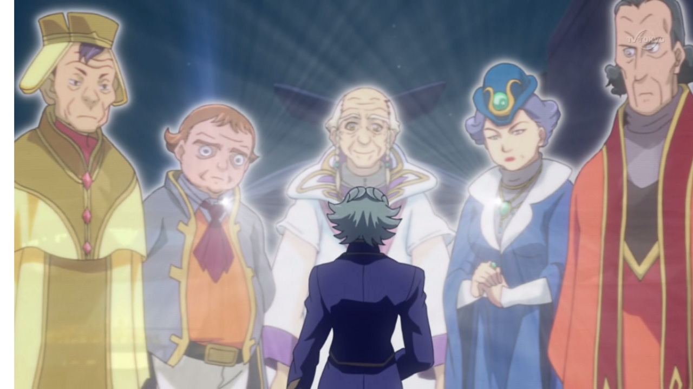 was in charge the City itself.
Roget: Those old fools.
Roget thought to himself that evening.
Roget: If it weren't for them, I'd be the sole ruler. But very soon, after my "secret weapon" destroys Jack Atlas in the Friendship Cup and wins, total domination will be mine.
He very looked forward to seeing the current Duel King being crushed by "him". However, as he mused over this inevitable outcome, he got an alert from one of his officers on the comm system.
Roget: Yes ?
Roget asked dully, not believing anything could go wrong to tonight. His panic stricken officer proved him otherwise.
Officer: Director, we have a situation ! Sergey is gone !
The man shouted. The news made Roget spring out of his chair in shock.
Roget: WHAT !? What do you mean "gone" !? Where is he !?
Roget demanded.
Officer: I don't know, sir ! I was about to leave for the night when I heard a loud noise coming from the garage area. I went to check it, and several officers were down and I saw Sergey take off on his D-Wheel ! There was nothing I could do! I'm sorry Director !
Roget slammed his fist on the desk in frustration.
Roget: Damn, not again.
Roget muttered to himself. He knew controlling that beast of a human would be difficult, even with all the "adjustments" to his body after taking custody of him.
Roget: His programming must still be glitchy.
he thought.
He would have to make more adjustments to him after they bring him back.
Roget: Don't just sit there you lot, we have an asset loose on the streets ! Find him, now !
Roget ordered.
Surveillance Team: Yes Director !
His surveillance team said as they got to work. Roget hoped they'd find Sergey before he did something to cause any kind of disturbance. Somehow though, he doubted that.
Yusei, Yugo, and Rin continued their ride out of the City. So far, no interference from Sector Security. At the rate they were going, they would be home free before the end of the night. Then, once they were outside the City's limits, Yusei would activate his beacon so the three of them would get picked up by their "transport."
As they came out of a tunnel, Yusei could see a big, bright bridge not far away.
Yusei: There ! Once we cross that bridge, we should be far enough for me to contact…
Yusei stopped talking when he turned to face Yugo and Rin. He saw something big and fast coming up from behind them !
Yusei: Yugo ! Rin ! Behind you !
Yugo moved his D-Wheel out of the way just in time as a huge black and gold DWheel strongly resembling a chariot came roaring past him and Rin. It had huge spikes protruding from both sides of the front wheel. Yugo's D-Wheel barely missed being
scratched by the unknown rider.
strongly resembling a chariot came roaring past him and Rin. It had huge spikes protruding from both sides of the front wheel. Yugo's D-Wheel barely missed being
scratched by the unknown rider.
Yugo: Rin ! You okay ?
Yugo asked, worried for his friend.
Rin: Yes, I'm fine. Who is that ?
She asked as the rider caught up with Yusei.
Yugo: Whoever that guy is, he obviously ain't friendly.
Yugo said to Rin.
Yugo: Hey ! What's your problem, Jackass !?
Yugo shouted to the man that nearly ran them over. He knew that jerk wasn't from Sector Security, not from the look of him. The man was now side by side with Yusei.
Yusei: Who are you ? And what do you want ?
Yusei asked strongly. The man gave a twisted smile.
???: What I want… is to see your pain and revel in your destruction ! Show me a beautiful Duel ! A Duel where your suffering is my joy as I crush you… Duelist !
The man declared. Yusei knew right away this man was too dangerous to ignore. He had to get past him if he, Yugo, and Rin had any chance of escape.
Yusei: You want a Duel ? Fine, then let's duel
Yusei declared. Just then, a computer voice spoke from both D-Wheels.
Dashboard: Field Spell Activate !
“Neo Speed World ”
Duel Mode: On. Autopilot: Standby.
”
Duel Mode: On. Autopilot: Standby.
Then a purple pulse of light had spread across the sky. Hexagonal pillars emerge from the ground, and the pillars splay out into road sections which sprout side-shoulders and Solid Vision bars.
Ordinator Voice: A Duel has commenced. All ordinary vehicles on the route, please evacuate at once.
Said the computer. Any and all vehicles that weren't dueling left the streets at once, including Yugo and Rin. They now were now watching from a street parallel
to where the Duel was about to take place.
Rin: Can Yusei beat him ?
Rin asked, afraid for their new friend.
Yugo: Espérons-le.
Répondit Yugo. Aussitôt, Yusei et le rider inconnu déclarèrent en même temps :
Back at Sector Security Headquarters, Roget's people were working hard to find Sergey. So far, nothing had turned up.
Roget: Have we found him yet !?
Roget barked impatiently.
Woman: Negative, sir. Nothing yet.
Said one of a young woman doing surveillance.
Roget: Keep looking ! He's out there somewhere! We need to find and secure him before...
Man: Director! A live news feed is coming in now! A Riding Duel has just started on Highway Number 8! I really think you should see this, sir!
Said another of Roget's people.
Roget: Put it through !
Roget ordered. He hoped this wasn't what he dreaded it would be. As he saw the news broadcast, he knew he was right. A new screen appeared showing a young woman in a cowgirl outfit.
Melissa Claire: Hi everyone ! This is Melissa Claire coming to you live above the City's streets ! My camera crew and I are currently flying in our helicopter to
observe a Riding Duel that's getting underway ! Listen to those crowds ! You can feel the excitement in the air ! Let's see if we can get a better look at the
two Duelists about to go head to head !
As the cameras focused on the two Duelists, Roget immediately recognized one of them. He cursed loudly.
Roget: Sergey ! Damn it all! What's that maniac thinking !?
Even though he was pissed, Roget was inwardly relived that he wasn't identified yet by the media. He hoped it would stay that way. He then noticed the other rider alongside Sergey.
Roget: Who is the other Duelist ?
He questioned after calming down a bit.
Woman: We don't know, sir. Judging by his appearance, he's most likely one of the Commons.
Said the first woman.
Roget: Listen people ! Have a large unit of officers move out to apprehend Sergey the moment the Duel is over ! Make sure they are in position !
Ordered the Director.
Surveillance Team: Yes sir !
His men and woman responded as they dispatched their retrieval unit. Roget then watched the Duel unfold, not caring what became of the Duelist who had the worst luck in the world to go up against the "Duelist Crusher" himself.
Sergey declared, taking the first turn.
Turn 1: (Yusei: 4000 LP / Main: 5)(Sergey: 4000 LP / Main: 5)
Sergey: I will be first. My turn ! I Summon “Thorn Prisoner Van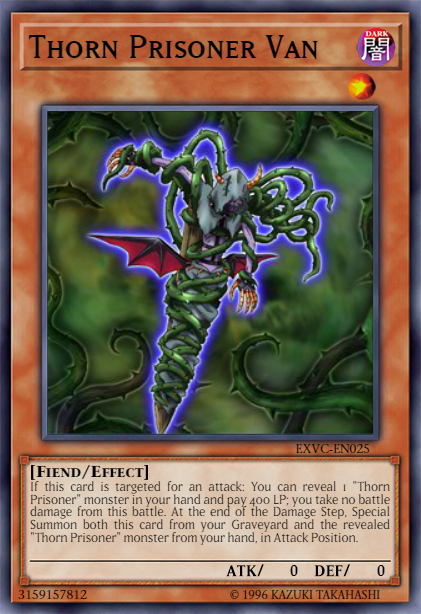 ” !
Sergey's opening Monster looked like a purple horned demon wrapped to a wooden pole by thorny vines.
Sergey: Then I Set 1 card and end my turn.
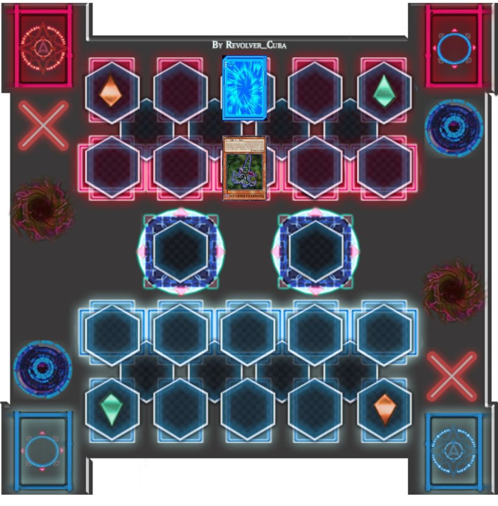Yusei didn't lower his guard for an instant.
Yusei: A Monster with 0 Attack Points ? It must have an effect that would somehow protect that man, or maybe a Tribute for his facedown card? Only one way to know !
Yusei thought as he began his turn.
Turn 2: (Yusei: 4000 LP / Main: 6)(Sergey: 4000 LP / Main: 3)
After a look at his cards, he began to come up with a plan to win. He just had to make the right moves.
Yusei: First, I Summon “Speed Warrior ” !
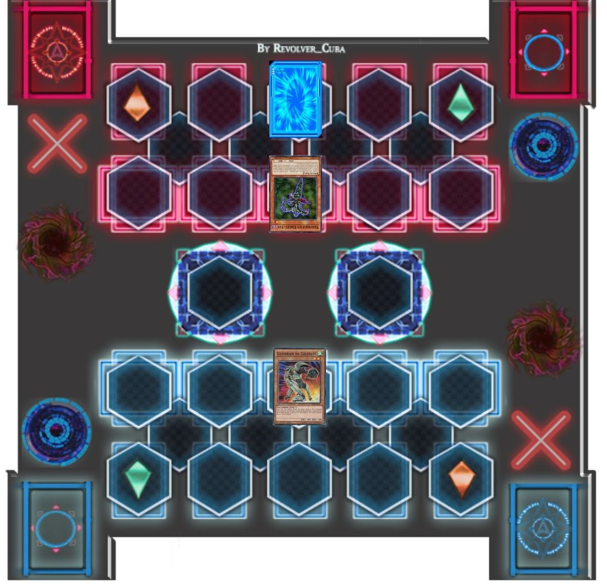Yusei's Monster resembled an armored roller skater.
Yusei: Then I play the Magic card: “Dual Summon ” ! This lets me Normal Summon again this turn !
Yusei: Now I Normal Summon the Tuner Monster, “Junk Synchron ” !
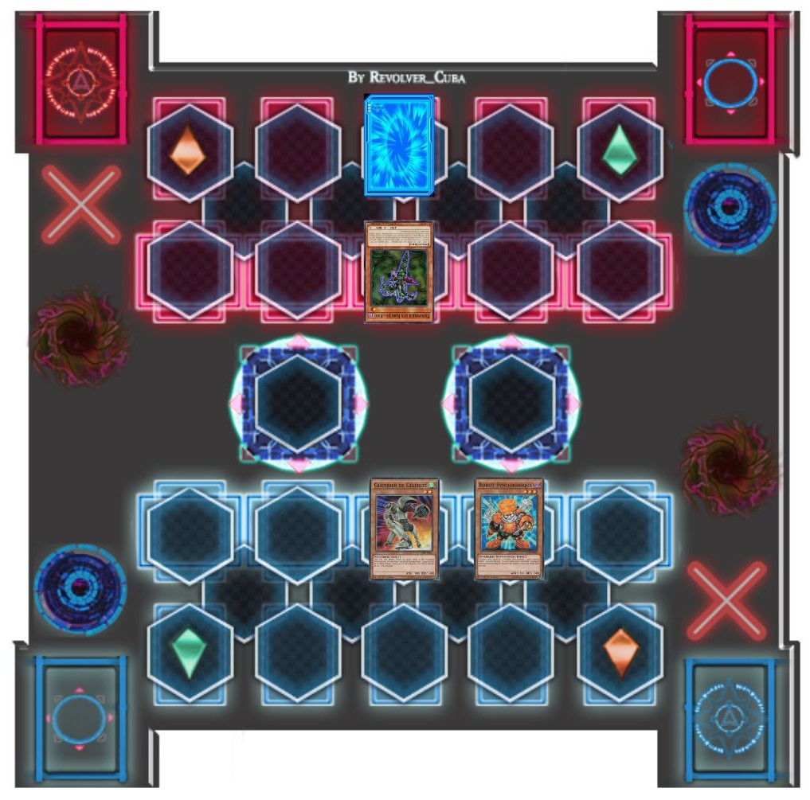Yusei's Tuner, a little orange robot, now stood alongside it's fellow Monster.
Yugo: A Tuner ? Is he going to Synchro Summon already ?
Yugo se demandait.
Rin: Maybe.
Rin replied. His next move surprised them.
Yusei: Battle !
“Speed Warrior ”
attack
“Thorn Prisoner Van ”
!
Now
“Speed Warrior ”
's Effect activates! During the Battle Phase of the turn it was Normal Summoned,
“Speed Warrior ”
's Attack Points is doubled.
(Speed Warrior: 900 x 2 = 1800 ATK)
Speed Warrior skated gracefully at Sergey's thorn like Monster and blew it to pieces with kicks from both it's legs.
Yugo: Nice ! Yusei can get in some good Damage right from the start !
Yugo said excitedly, expecting both of Yusei's Monsters to hit the big man's Life Points. But then, the man gave a creepy smile.
Sergey: “Thorn Prisoner Van ” 's Monster Effect activates! When it is targeted for an attack, I can reveal a "Thorn Prisoner" Monster in my hand and pay 400 Life Points to reduce the Battle Damage to 0! I have the Tuner Monster, “Thorn Prisoner Darli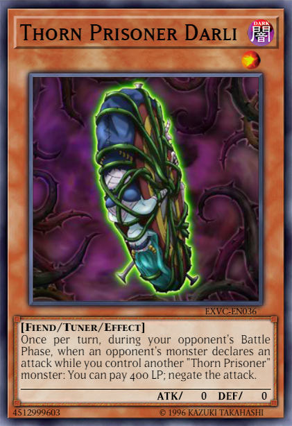 ” in my hand .
Sergey declared, showing his card to Yusei.
(Sergey: 4000 LP - 400 LP = 3600 LP)
Rin: That guy managed to reduce the amount of Damage he took !
Rin said in surprise.
Yugo: Maybe, but Yusei can now attack him directly with his other Monster !
Yugo pointed out. However, he was proven wrong yet again.
Sergey: I now activate
“Thorn Prisoner Van ”
's other Effect! At the end of the Damage Step, both
“Thorn Prisoner Van ”
in my Graveyard and
“Thorn Prisoner Darli ”
in my hand can now be Special Summoned !

Both Monsters then appeared on the Sergey's Field. Darli looked to be a paled skin woman tied to a huge wheel by more thorny vines.
Yugo: Are you kidding !?
Yugo said, annoyed that move.
Rin: It's not over yet.
Rin said, trying to calm down Yugo. Yusei didn't appear frustrated.
Yusei: Now I attack “Thorn Prisoner Darli ” with “Junk Synchron ” !
Yusei's Tuner moved in to strike, but the blow never landed.
Sergey: I activate
“Thorn Prisoner Darli ”
. 's Effect! Once per turn, when I have another "Thorn Prisoner" Monster on the Field during the Battle Phase and when my opponent's Monster attacks, I can pay
400 Life Points to negate the attack.
Sergey said, stopping Yusei from inflicting Damage.
(Sergey: 3600 LP - 400 LP = 3200 LP)
Sergey: Yes! The pain ! The Damage ! It is only just the beginning of bliss !
He said, sounding deranged while looking happy.
Yugo: Dammit ! That bastard's Monsters have no Attack Points, but he's protected from damage in battles !
Rin: It's both annoying and creepy. Just who is that man ?
Rin wondered. Somehow, the way he was dueling, with him taking damage like that with pleasure, somehow seemed familiar…
Melissa Claire: Oh, too bad ! The Duelist on the red D-Wheel attacked with both of his Monsters, but the bigger guy had significantly cut the Damage down ! I have a
feeling the next turn is really going to be good !
Melissa reported as she continued to broadcast the Duel.
Roget, watching from afar, wasn't surprised at all.
Roget: That fool. He will soon know what Sergey is truly capable of… and why he's called the "Duelist Chrusher".
Back to the Duel, Yusei suspected his opponent's strategy.
Yusei: He uses Monsters with no Attack Power, but with Damaging reducing effects. If I'm right, I need to finish this fast and get out of here with Yugo and Rin.
He hoped he would be able to, if he drew what he needed on his next turn.
Yusei: I Set 2 cards and end my Turn !
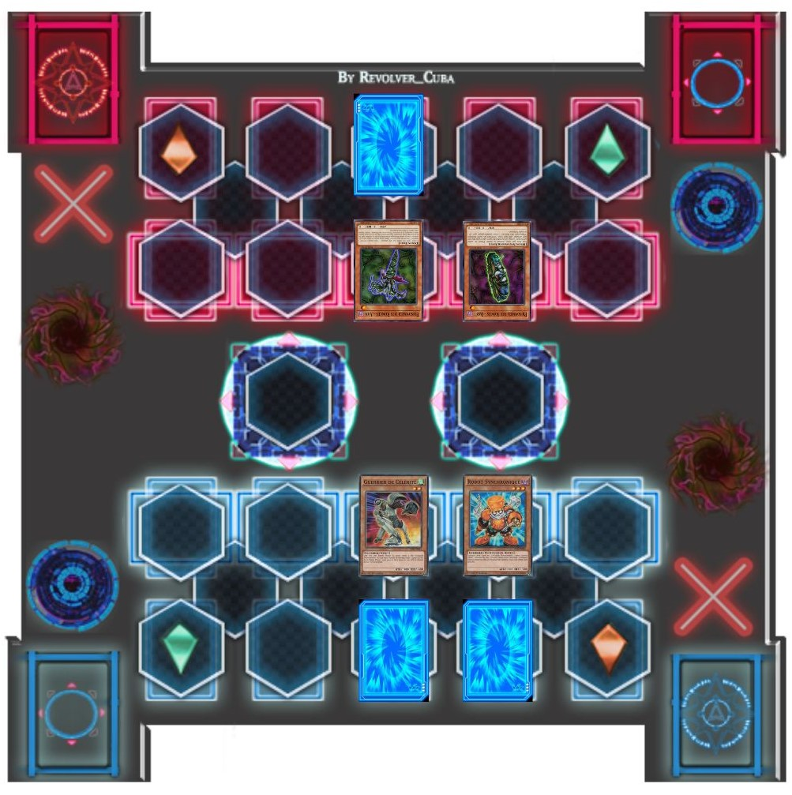Turn 3: (Yusei: 4000 LP / Main: 1)(Sergey: 4000 LP / Main: 3)
Sergey the smiled like he was in Heaven.
Sergey: Now the pain really begins! I am Tuning my Level 1
“Thorn Prisoner Van ”
to my Level 1
“Thorn Prisoner Darli ”
! Lay bare your twisted and wicked desire and offer your flesh to the thorns ! Synchro Summon ! Appear now ! Level 2 !
“Thorn Observer Zuma ” !
A simply nightmarish looking Monster appeared before Sergey. This one was also another thorn vined prisoner but with a chained iron ball strapped to its wrist.
Yugo: Okay, that's just straight up scary !
Yugo said, seeing the new Monster.
Melisse Claire: The big Duelist has Synchro Summoned his ace Monster ! With being only Level 2 and with 0 Attack Points, I don't see how much it could do. Let's see what happens !
Melissa commentated. Yusei knew better than to judge a Monster by it's appearance.
Yusei: It may look weak, but there's no way that it is.
He thought. And Sergey's next move proved just how right he was.
Sergey: “Thorn Observer Zuma ” 's Monster Effect activates! When it is Synchro Summoned, all Monsters on the Field get a Thorn Counter place on them!
As he said this, Zuma spat out 3 Thorns at each Monster and pierced them, including itself.
Sergey: As long as “Zuma ”
is on the Field, all Monsters with Thorn Counters can't attack! Also, during each End Phase, the turn player takes 400 points of Damage for each Thorn Counter on
the Field !
He said with twisted delight.
Yugo: That means if Yusei can't get rid of those Thorn Counters before his next turn ends…
Yugo began.
Rin: He'll lose 1200 Life Points !
Rin finished in worry. Yusei himself, however, didn't seem to be panicking.
Sergey declared as his turn ended. Because of “Zuma ”, he loses 1200 Life Points.
(Sergey: 3200 LP - 1200 LP = 2000 LP)
Melissa Claire: Oh my ! He lost a chunk of Life Points right there! So far, the Damage in this Duel seems to be one sided. One Duelist is taking more and more
Damage, while the other has not been touched at all! Does he have some kind strategy that involves damaging himself ?
Melissa wondered.
As the Duel continued, Rin kept observing the behavior of Yusei's opponent. His intimidating size, being happy while causing himself pain, and seemingly not caring for his own well being.
Rin: What was this guy's deal ? How could he expect to win by constantly losing Life Points ? It just doesn't make sense. I've got a bad feeling about this Yugo.
Rin said aloud.
Yugo: I'm sure Yusei can handle that asshole. The sooner that other guy gets crushed, the faster we can move away !
Yugo replied.
Suddenly, Rin thought of something she hadn't until now. Something clicked in her mind after she heard the word "crushed". Then, a second later, it all became clear.
Rin: Oh no… Not him !
Rin said in alarm.
Yugo: What ? What is it Rin ?
Yugo asked, concerned with how she sounded.
Rin: Yugo, I know who that man is !
Rin said as she turned to Yusei's direction and took a deep breath.
Rin: Yusei, can you hear me !? I've just figured it out ! Your opponent… is Sergey Volkov! He's extremely dangerous ! Don't let him get the upper hand !
She yelled at the top of her lungs, praying he heard her. Yugo almost lost control of his D-Wheel when he heard that name.
Yugo: "Did you just say Sergey Volkov !? As in the "Duelist Crusher" !? Please tell me you're joking Rin !
Yugo begged. Rin felt sure of it now.
Rin: I wish I was ! I remember how Sergey always liked his Duels ! He always lets his opponents think they have the advantage, only to "crush" them in the end with overwhelming power ! That's exactly how he's dueling now ! Also, I remember hearing that Sergey always enjoyed hurting himself as he also hurt others… he reveled in the pain inflicted upon himself as well as his opponents !
Yugo: But I thought he was supposed to be locked up at the Facility ! If Yusei is really dueling him… oh damn !
Yugo paled, knowing what this could mean if Yusei loses this Duel.
While this was happening, Melissa had just gotten some juicy info from one of her contacts on the ground. The news tip nearly made her faint.
Melissa Claire: Oh my gosh, really !? Oh, I owe you big for that one ! Thanks !
Melissa then addressed her audience once more.
Melissa Claire: Ladies and Gentleman, I have just received word from a reliable source that the huge Duelist that is constantly damaging himself is none other than
the Duelist Crusher, Sergey Volkov ! As anyone would know, he is the most violent, dangerous criminal this City has witnessed ! Last I heard, he was sent to the
Facility as it's top prisoner ! Oh boy, I feel really bad for the red rider now. I hope he doesn't die...
Melissa lamented, thinking Yusei had no chance of winning.
In his office, Roget was not happy that Sergey had been identified on live camera feeds.
Roget: Damn newswoman. Still, it won't change the outcome of this Duel. After Sergey is brought back, I'll have to come up with something to explain his breakout.
He pondered how to pull that off as the Duel continued.
In the Duel Lane, Yusei did hear Rin's warning. This indeed confirmed his suspicions about his opponent, and more importantly, his dueling strategy.
Yusei: If Rin is right, I need to end this Duel now! The longer it drags on, the worse it could be for all of us !
He thought as he began his next turn.
Turn 4: (Yusei: 4000 LP / Main: 2)(Sergey: 2000 LP / Main: 3)
One glance at the card he drew told Yusei all he needed to know.
Yusei: I Summon “Shield Warrior ” !
An armed soldier wielding a big spear and shield appeared on Yusei's Field. However, before he could play his next card...
Sergey: Trap Card open,
“Ibara no Zoshoku ”
! As long as this Trap is in play, each player will take 400 points of Damage during their End Phases for each Thorn Counter on the Field ! Also, if a Thorn
Counter gets removed, I take 100 points of Damage for each Counter I lose ! When all Thorn Counters are gone,
“Ibara no Zoshoku ”
is destroyed !
Sergey declared.
Yugo: Oh come on! With both the effects of
“Zuma ” and
“Ibara no Zoshoku ”
the damage that will be dealt has just been doubled !
Yugo said alarmingly.
Rin: So instead of 1200 points, Yusei could lose 2400 this turn ! That would really put his Life Points into the red !
Rin said.
Yusei, on the other hand, didn't intend to let that happen.
Yusei: I'm not not going to let you stop me from finishing my mission, Sergey ! I'm Tuning my Level 3
“Shield Warrior ”
and Level 2
“Speed Warrior ”
with my Level 3 “Junk Synchron ”
! Clustering wishes will become a new shining star! Become the path its light shines upon ! Synchro Shokan ! Take flight,
“Stardust Dragon ” !

A white and pale blue dragon emerged and roared as glittering stars surrounded it.
Melissa Claire: Woah ! That other guy just Synchro Summoned too ! Look at it ! That dragon is so pretty !
Melissa said, informing her viewers.
Rin: That must be Yusei's Ace Monster !
Rin said in astonishment.
Yugo: Damn ! And I thought
“Clear Wing ”
was cool looking.
Yugo added in awe.
Throughout the city, everyone watching the Duel gaped in the appearance of “Stardust Dragon ”. Even the Duel King himself, who was watching from his private room, couldn't help but admire this new dragon he had never seen before.
Rin: Yusei just sacrificed his two Monsters with Thorn Counters ! You know what this means Yugo ?
Yugo smirked, knowing the answer.
Yugo: Hell yeah ! Not only can Yusei attack again, but the Damage he'll take at the end of the turn just went way down !
Rin: Also, due to “Ibara no Zoshoku ”
, Sergey now loses 200 Life Points since he just lost two Thorn Counters !
Rin added.
(Sergey: 2000 LP - 200 LP = 1800 LP)
Yusei: Next, I play a Continuous Magic card called
“Domino ” !
” !
Yusei declared, but didn't mention what effects it had.
Yusei: Battle ! “Stardust Dragon ” attack “Thorn Observer Zuma ” ! Shooting Sonic !
Stardust Dragon fired a sparkling blast toward Sergey's Monster. Sergey still smiled.
Sergey: “Thorn Observer Zuma ” 's Effect activates ! When this card is being targeted for an attack, if all the Monsters used for it's Synchro Summon are in my Graveyard, I can pay 400 Life Points to negate the Battle Damage ! Nrrrrgggghhhh !!
(Sergey: 1800 LP - 400 LP = 1400 LP)
Yusei smirked. He expected that.
Yusei: Trap Card open,
“Synchro Blast ”
! Once per turn, when a Synchro Monster I control attacks my opponent's Monster, 500 points are dealt to you as Damage! Not only that, since you've lost your last
Thorn Counter, you lose another 100 points and
“Ibara no Zoshoku ”
is destroyed along with
”
! Once per turn, when a Synchro Monster I control attacks my opponent's Monster, 500 points are dealt to you as Damage! Not only that, since you've lost your last
Thorn Counter, you lose another 100 points and
“Ibara no Zoshoku ”
is destroyed along with
“Zuma ”
!
(Sergey: 1400 LP - 500 LP - 100LP = 800 LP)
Sergey actually chuckled loudly as he received the damage from Yusei's Trap.
Melissa Claire: Nice ! The red Duelist just dealt some damage of his own ! Things are really heating up now !
Melissa shouted in excitement.
Yugo: Yeah ! Get him Yusei !
Yugo cheered, while Rin still prayed that their new friend can survive this.
Roget scoffed as he observed the Duel.
Roget: He's only delaying the inevitable. He'll end up like all the other trash Sergey tossed away once he's done with him.
Sergey, meanwhile, seemed to enjoy being "punished" by Yusei's unexpected way of damaging him.
Sergey: Yes ! That was a beautiful comeback ! Please don't let up now !
Yuei: I'm not done yet ! Next, the Effect of
“Domino ”
! When a Monster my opponent controls is destroyed by battle and sent to the Graveyard, I can send 1 card on my field to the Graveyard to destroy another Monster on the field !
This move confused everyone.
Rin: Wait a second ! Sergey doesn't have any Monsters left on the field! Why would Yusei play a card like that ?
Rin asked.
Yugo: He's gotta be up to something.
Yugo said, confused as well.
Yusei:
“Stardust Dragon ”
's Monster Effect ! When an Effect is activated that destroys cards on the field, I can Sacrifice
“Stardust Dragon ”
to negate the effect and destroy that card ! Victim Sanctuary !
In a brilliant show of sparkling lights, Stardust Dragon left the field, and Domino Effect was negated and destroyed.
Melissa Claire: Oh, now that pretty dragon is gone ! What could that Duelist be thinking !? I really love that dragon !
Melissa complained, wanting Yusei's Monster to come back. Sergey made his move next.
Sergey: I now activate “Zuma ” 's other Effect ! At the end of the Damage Step, I can Special Summon “Zuma ” and both the Monsters used for it's Synchro Summon back to my Field !
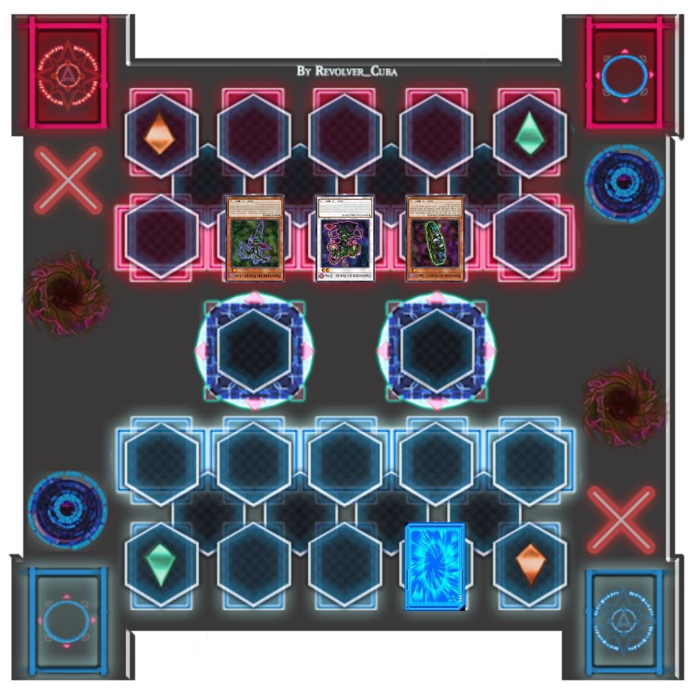Yusei watched as all three of Sergey's Monsters had returned.
Rin: This looks bad ! This is usually where Sergey makes his big move once his opponent's last turn is over !
Rin panicked. Yugo unexpectedly shook his head.
Yugo: Something tells me Yusei isn't done yet ! I can feel he's still got something up his sleeve Rin !
Rin hoped her friend was right. Yusei knew he had his enemy right where he wanted him.
Yusei: I end my turn ! During the End Phase of the turn it used it's Effect, “Stardust Dragon ” rreturns to my field !

Melissa Claire: Yes ! My wish is granted ! Thank you Red Rider !
Melissa cried in joy and relief.
Yugo and Rin: Yusei...
Yugo and Rin said together. They hoped Yusei can hold on till his next turn. They wouldn't have long to find out though.
At the moment Yusei declared the end of his turn, he smiled to himself.
Roget: Yes. It's almost over now. That man may have fought hard, but in the end it was never enough. Scum like him could NEVER take down Sergey Volkov, the Duelist Crusher ! Even Jack Atlas himself won't stand a chance once they face off in the Friendship Cup. One more turn is what Sergey needs to…
Yusei: I'm ending this Duel now!
Roget: WHAT !?
Roget thought he heard things. Surely that Commons couldn't possibly think that… but then Roget remembered something. He started to sweat now.
Roget: Impossible ! His other facedown card ! Don't tell me… !?
What he saw next would nearly cause him a mental breakdown.
In the Duel, Yusei had just brought back Stardust Dragon. Sergey was about to declare the start of his next turn when…
Yusei: I'm ending this Duel now ! Trap card open ! “Meteor Stream ” ! When a Monster is Special Summoned to my Field during the turn it was Sacrificed, 1000 points are dealt to you as damage !
Sergey, knowing full well what this meant, began laughing like the crazy, delusional maniac he was.
Sergey: IIIAAAARRRRGGGHHH !!!!!
(Sergey: 800 LP - 1000 LP = 0 LP)
Jean Michael Roget, Director of Sector Security, stood in complete shock and total disbelief. His secret weapon, his means of toppling the Duel King…was defeated by some unknown rat from the Commons. And the worst part was that the whole thing had been caught on camera, meaning everyone had witnessed it. Even Jack Atlas himself had to have seen this unforeseen event. Unable to to contain his fury, he let loose a long, drawn out scream of outrage.
As she saw Sergey's defeat at the hands of Yusei, Melissa Claire almost fell out of the copter in shock.
Melissa Claire: I…I don't believe it ! Tell me you filmed that !? Everyone, something unbelievable has just happened tonight ! I'm still having a hard time seeing
it with my own eyes ! Sergey Volkov, the "Duelist Crusher", whom no one, I repeat, NO ONE PERSON, has ever brought down in a Duel… was just defeated by the
unidentified newcomer ! This is definitely one for the history books ! Whoever the red rider is, I'm now officially a fan of his ! Hey, Red Rider ! If you're
listening, call me for an interview, will ya !?
She asked with a playful wink.
Throughout the city, everyone cheered for Yusei's unprecedented victory over Sergey. The people in both the Tops and Commons alike roared with amazement. Soon they all began to chant.
People of City: Red Rider ! Red Rider ! Red Rider !
In his room, Jack Atlas smiled to himself.
Jack: "Red Rider", huh ? I think I've finally found a worthy opponent.
With the Riding Duel now over, the hologram walls vanished and Yugo and Rin were able to rejoin with Yusei.
Yugo: Yusei ! You did it, man ! You've defeated the Duelist Crusher ! Totally awesome !
Yugo praised.
Rin: You're incredible, Yusei ! I think you might actually be on par with Jack Atlas himself !
Rin added. Yusei smiled back.
Perhaps. But now, we can finally get back to leaving…
Sergey: No ! You have suffered no pain ! I cannot allow this displeasure !
The trio looked behind them to see Sergey catching up to them again.
Sergey: Come, let us experience the pain and destruction together !
Yugo: Come on ! Hasn't that sick bastard had enough for one night !?
Yugo protested in annoyance. Sergey laughed maniacally as he speed up and rammed into Yusei, who couldn't dodge it in time. To their horror, Sergey was trying to push Yusei off the side of the bridge, which they had just now started crossing !
Rin: No ! Yusei ! Sergey's going to kill him !
Rin cried out.
Yugo: Actually, from the way that bastard talked, I think he plans for both of them to go down ! But hell if I let that happen ! HANG ON RIN !
Yugo warned as he sped to catch up with Yusei and Sergey.
Rin: Yugo ! What're you doing !?
Rin yelled, holding on to him for dear life. Yugo didn't answer, trying to focus all his attention on saving their new friend.
As hard as he tried, Yusei couldn't break free. He cursed for letting this happen. Sergey continued his insane laughter as they neared the edge.
Sergey: YES !! NOW THIS SHALL BE BEAUTIFUL !!!
Just as they were both about to go over, Yugo rammed his D-Wheel into Sergey's to force him away from Yusei. This collision instead caused all three vehicles to fly off the bridge at the same time !
During the free fall, Sergey did separate from them, still laughing as he fell. Yusei, seeing Yugo and Rin now falling beside him, reached out to them with his right hand. Yugo then reached out with his left. The moment Yusei grabbed Yugo, a few things happened all at once.
First, a red mark shaped like a Dragon's head started glowing on Yusei's right arm. Then Yugo's eyes glowed green
started glowing on Yusei's right arm. Then Yugo's eyes glowed green and began to scream in pain. Rin's bracelet began to glow bright green as well as she continued to hold on to Yugo. And lastly, all three were consumed by a massive
crimson colored dragon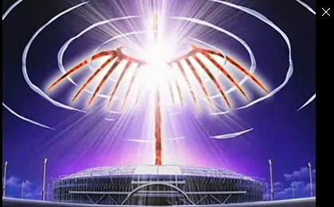 that came out of the sky…
and began to scream in pain. Rin's bracelet began to glow bright green as well as she continued to hold on to Yugo. And lastly, all three were consumed by a massive
crimson colored dragon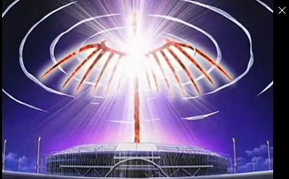 that came out of the sky…